| variable | Mean | SD | Min | Max |
|---|---|---|---|---|
| rating | 64.63 | 12.17 | 40.00 | 85.00 |
| complaints | 66.60 | 13.31 | 37.00 | 90.00 |
| learning | 56.37 | 11.74 | 34.00 | 75.00 |
| raises | 64.63 | 10.40 | 43.00 | 88.00 |
Lab 3 - Linear Regression
Part 1
Descriptive Statistics for Rating, Complaints, Learning, and Raises
A Histogram of Workplace Rating, with an Overlaid Density Curve
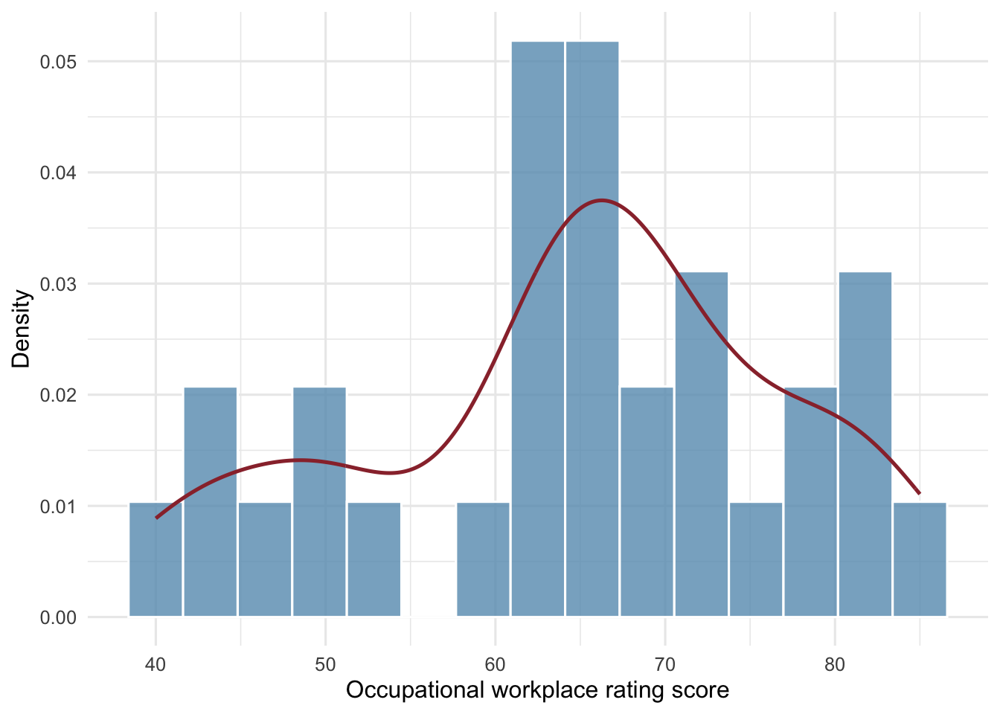
Relationship Between Workplace Rating and Complaints
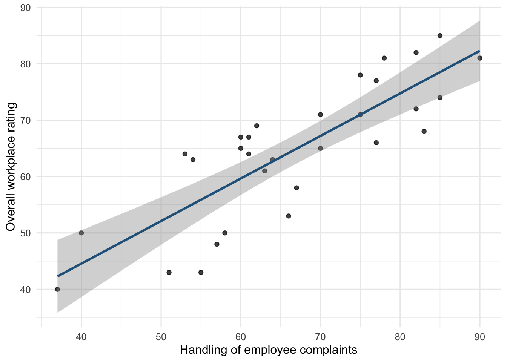
Relationship Between Workplace Rating and Raises
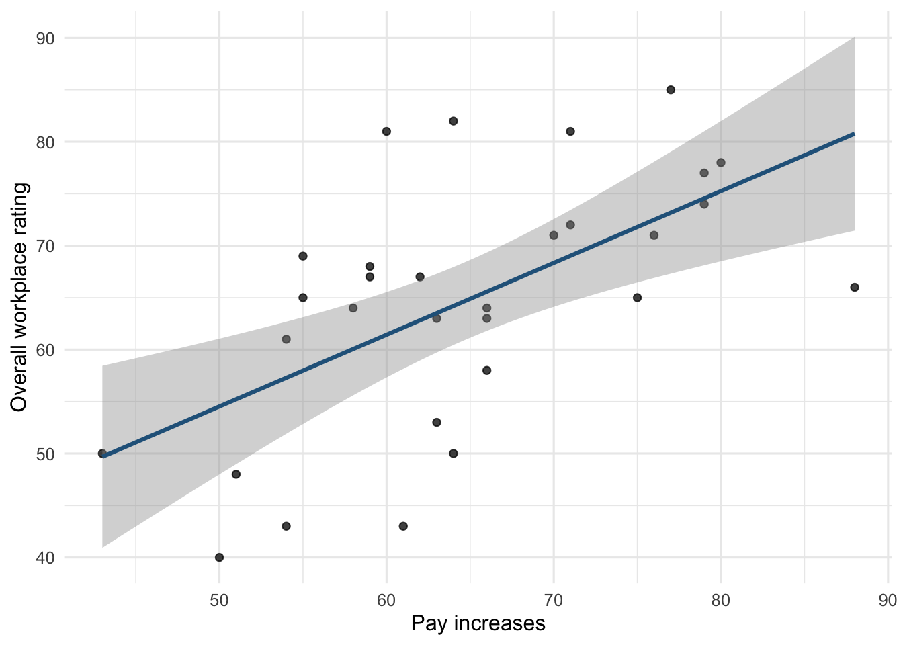
The average overall workplace rating across departments was 64.63. According to the scatter-plots, there is a positive relationship between overall workplace rating and both predictive factors of raises and handling of complaints. However, workplace ratings scores and handling of complaints demonstrates a stronger correlation. There is moderate scatter around the regression line for workplace ratings and raises, suggesting a weaker correlation. I would have expected the opposite to be true, because I think a lot of people feel like they “don’t get paid enough for this”.
Part 2
Developing Predictions
Handling of workplace complaints may be associated with workplace ratings because if people are more likely to be heard about their concerns, they may feel more satisfied with the quality of management and the workplace overall.
I think that opportunities for learning could potentially explain additional variation beyond complaint handling because if you feel like you can ‘move up’ in the company and advance your skills with them, you might have a better outlook on the workplace as a whole.
Still I think pay increases could explain further variation after accounting for complaints and learning because if employees feel like they aren’t getting compensated enough for their time and worth, they may become unsatisfied in their career.
Interpretation of the complaints coefficient changes between M1, M2, and M3
Complaints coefficient M1: 0.75461 Complaints coefficient M2: 0.6435 Complaints coefficient M3: 0.65349
The complaints coefficient for M1 through M3 suggest that complaint handling remains a positive, and fairly strong predictor of workplace rating, even when controlling for predictors like learning and raises. All three complaint coefficients were statistically significant, even though there was a dip between m1 and m2
Part 3
3.2 - 3.5 Model Performance
| Model | R² | Adjusted R² | RMSE | ΔR² | Residual df | Nested df | Nested F | Nested p |
|---|---|---|---|---|---|---|---|---|
| M0: Null | 0.000 | 0.000 | 11.968 | — | 29 | — | — | — |
| M1: Complaints | 0.681 | 0.670 | 6.756 | 0.681 | 28 | 1 | 60.726 | < .001 |
| M2: Complaints + Learning | 0.708 | 0.686 | 6.467 | 0.027 | 27 | 1 | 2.380 | 0.135 |
| M3: Expanded | 0.708 | 0.675 | 6.464 | 0.000 | 26 | 1 | 0.025 | 0.876 |
Model Performance Interpretations
Model 2 and Model 3 both explained 70.8% percent of the variance in rating scores (R2 = 0.708). This means that adding learning onto complaints helped improve performance, to the same extent that adding both learning and raises to complaints did. However, M3’s adjusted R2 drops to 0.675, compared to M2 of R2 = 0.686. So, when we add raises onto the complaints and learning the model, it is actually just complicating it and not adding much explanatory value. M1 explains 68.1 percent of the variance, M2 adds an additional 2.7% explanatory value, and M3 does not add any addition explanation in variance compared to M2. The M1 complaints model adds a statistically significant improvement in fit compared to the null.The largest reduction in RMSE, was between M0 and M1 complaints (from 11.968 to 6.756 rating points, respectively). However the reduction in rating errors did not seem to decrease substantially from M1 to M2 and M3 (RMSE of M1 being 6.756, to 6.467 for M2, and finally 6.464 for M3). Taken together, the table suggests that complaints is the predictor that provides the most explanatory value for this data set.
Part 4
M1 Diagnostic Findings
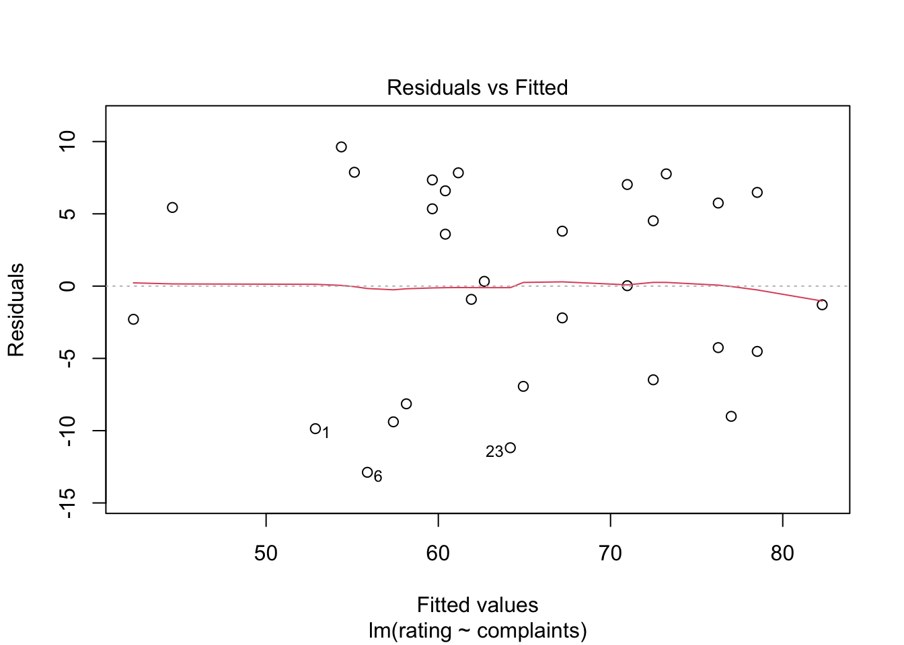
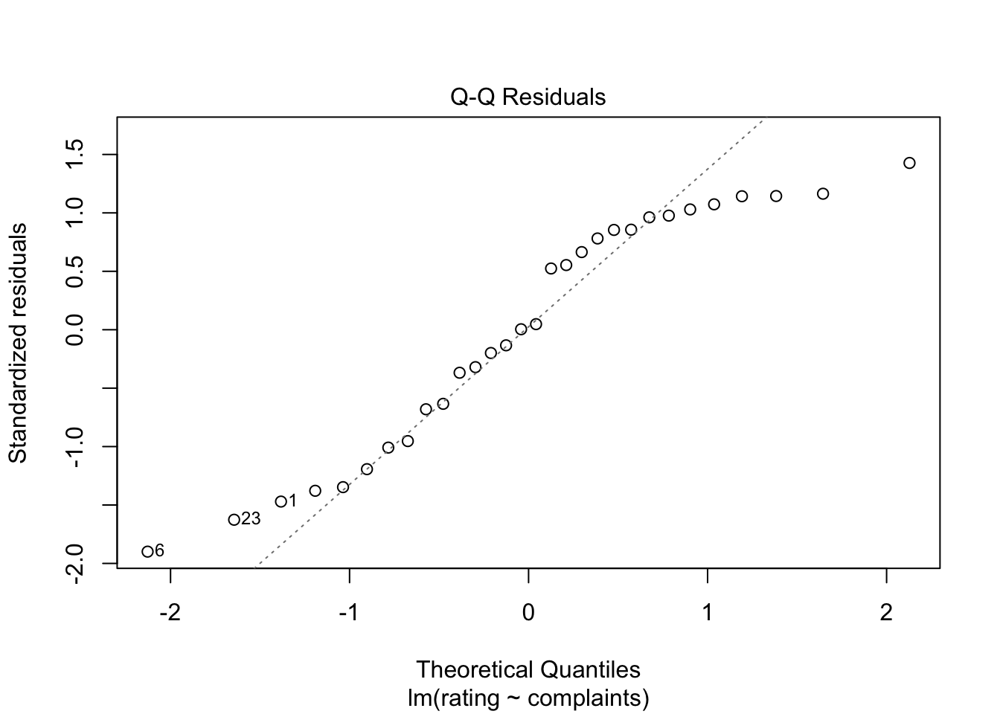
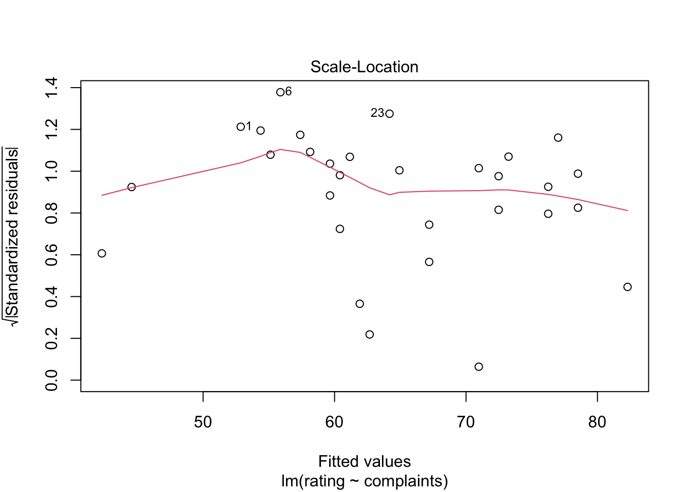
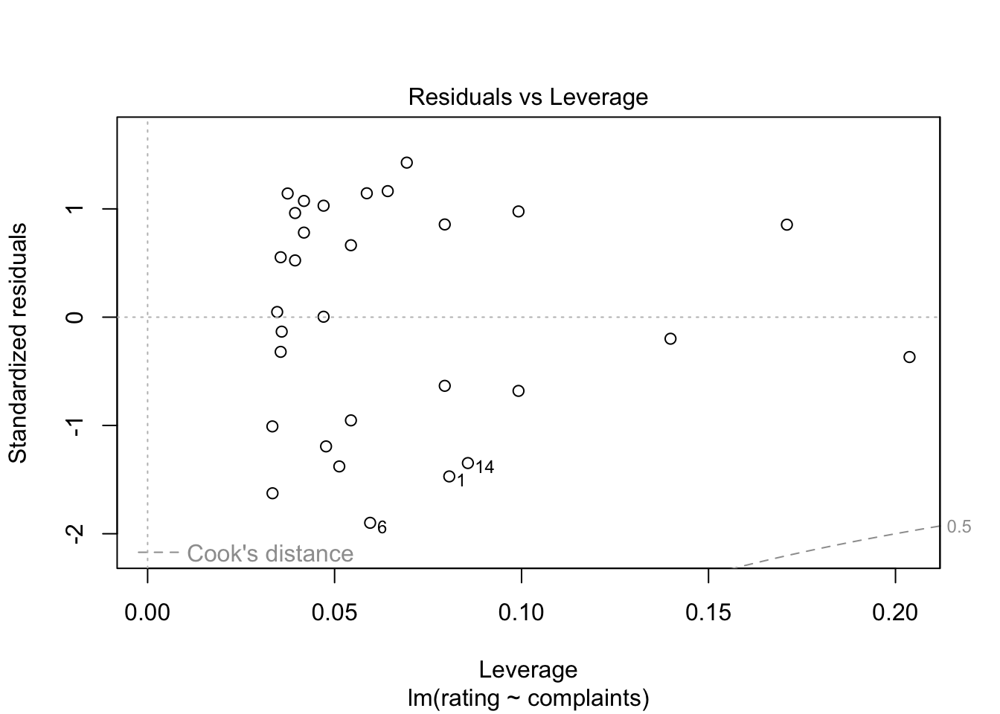
There seems to be no systematic patterns or curves for the residual fitted values, supporting the assumption of linearity. The residuals do not seem to deviate dramatically from the normal distribution, however there is a slight spread that occurs at the tail ends. The Scale–location plot has a slight bump to it, suggesting that the assumption of homoscedasticity may not be fully satisfied. There are three points that appear to have more leverage compared to the others in the Residuals vs Leverage plot. Multicollinearity cannot be tested because there is only one predictive variable. I would say that the model has predictive value considering the assumptions of linearity and normality appear to be met. However, results should be interpreted with caution considering the potential violation of homoscedasticity.
M2 Diagnostic Findings
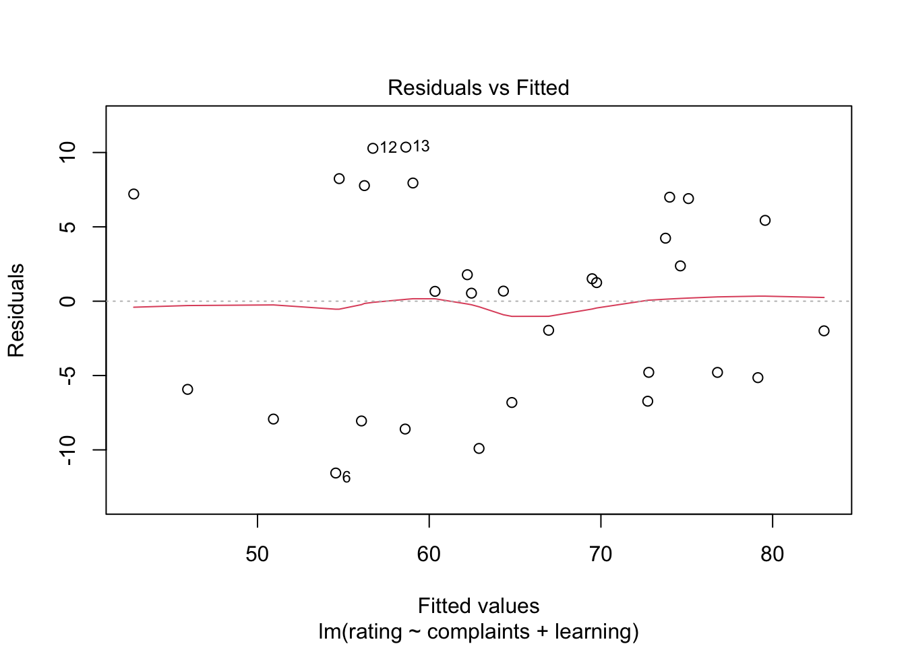
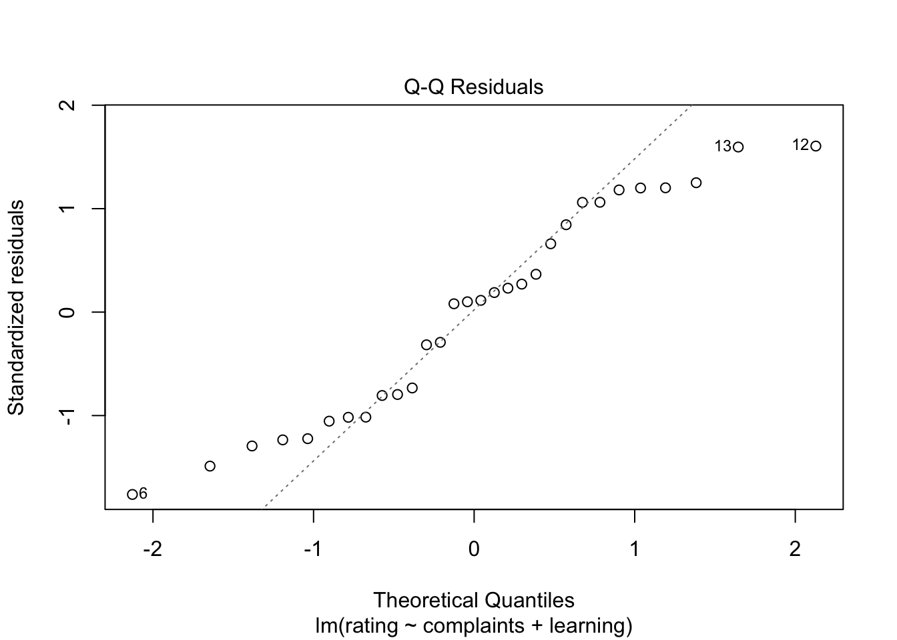
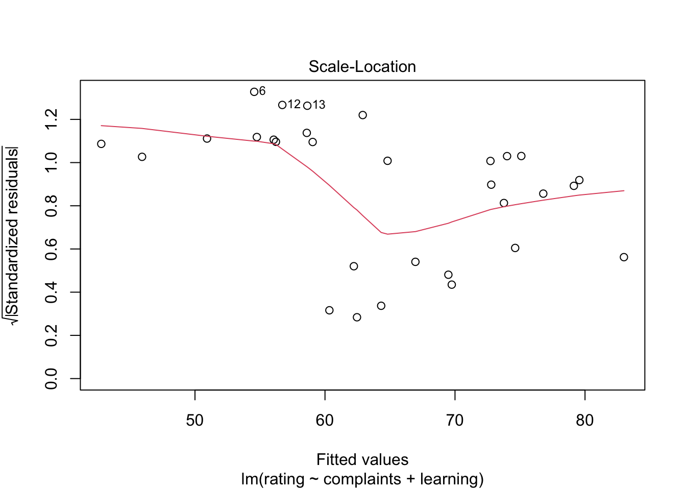
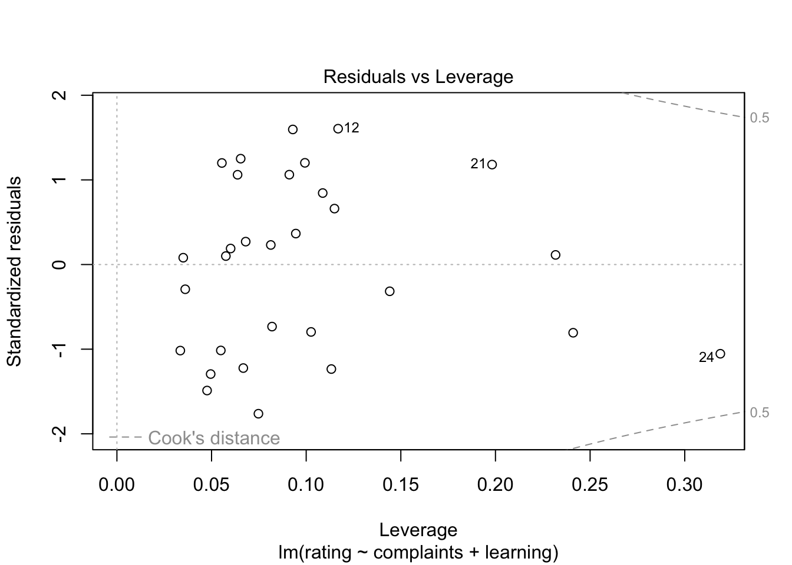
For the residuals versus fitted values, there seems to be no systematic patterns or curves, supporting the assumption of linearity. The residuals do not seem to deviate dramatically from the normal distribution, however there is a slight spread that occurs at the tail ends. The Scale–location plot has a moderate curve to it, suggesting that the assumption of homoscedasticity may not be fully satisfied. There are three to four points that appear to have substantial leverage compared to the others in the Residuals vs Leverage plot. VIF values for both complaints and learning were 1.55, suggesting that the were not so closely related that we cannot see their unique contributions in the model. I would not say that the model is useless, considering the assumptions of linearity, normality, and multicollinearity appear to be met. However, results should be interpreted with caution considering the potential violation of homoscedasticity.
Part 5: Preferred Model
I believe that, taken together, M2 slightly outperforms M1. They both explain the same amount of variance in rating scores, however M2’s adjusted variance is slightly higher. M2 has a slightly lower RMSE, meaning that M2’s typical error size is just a bit smaller. Although M2’s second factor of learning does not add a lot of predictive value, it only uses two predictive degrees of freedom. The diagnostic tests for the two models appear roughly equal. So, given M2’s adjusted R2 and RMSE, I would pick it over M1.
5.2. Coefficient table
| Predictor | Estimate | SE | 95% CI lower | 95% CI upper | p |
|---|---|---|---|---|---|
| (Intercept) | 9.871 | 7.061 | −4.618 | 24.359 | 0.174 |
| complaints | 0.644 | 0.118 | 0.400 | 0.887 | < .001 |
| learning | 0.211 | 0.134 | −0.065 | 0.487 | 0.128 |
The complaints predictor coefficient was 0.644. The learning predictor coefficient was 0.211. Both of the predictor coefficients were positive, with complaints being the stronger of the two predictors. When learning is held constant, a one unit increase in the complaints score is associated with a 0.644 increase in work rating score. When complaints are held constant, a one unit increase in the learning is associated with a 0.211 increase in work rating score. The complaints coefficient has a 95% confidence interval of 0.4 and 0.887. The confidence interval does not include zero, indicating that it is statistically significant that complaints is positively related to workplace ratings. For the learning coefficient, it has a 95% confidence interval of -0.065 and 0.487. The confidence interval for learning does include zero, there is not significant evidence that learning is independently related to workplace rating when you control for complaints.
5.4 Model Performance Summary
Model 2 had an R2 value of 0.708, an adjusted R2 value of 0.686, and an RMSE of 6.467. This means that complaints and learning explained 70.8% of the variation in workplace ratings. After accounting for adding another variable into the mix (learning) in addition to just complaints, the model explained 68.6% of the variation in workplace ratings. Model 2’s RMSE implies that the predictive workplace rating score will be different to the actual observed workplace rating by an average of 6.47 points.
Part 6: Findings and Limitations
Taken together, the models show that complaints are the biggest predictor of workplace rating scores. Learning added a small amount of predictive value for workplace rating, but it was not statistically significant. Lastly, pay raises provided very little in terms of additional independent explanatory value to workplace ratings. The diagnostic tests highlighted that for both model 1 and model 2, the assumption of homoscedasticity may not have been fully satisfied, and therefore the p values should be interpreted cautiously.